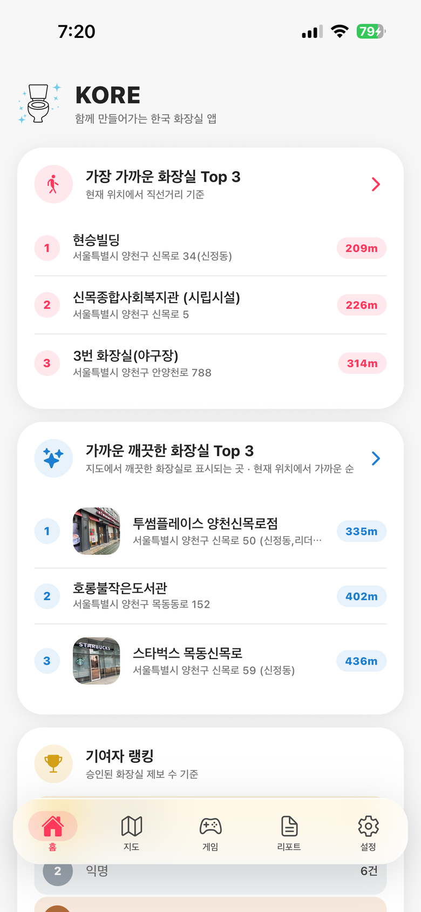
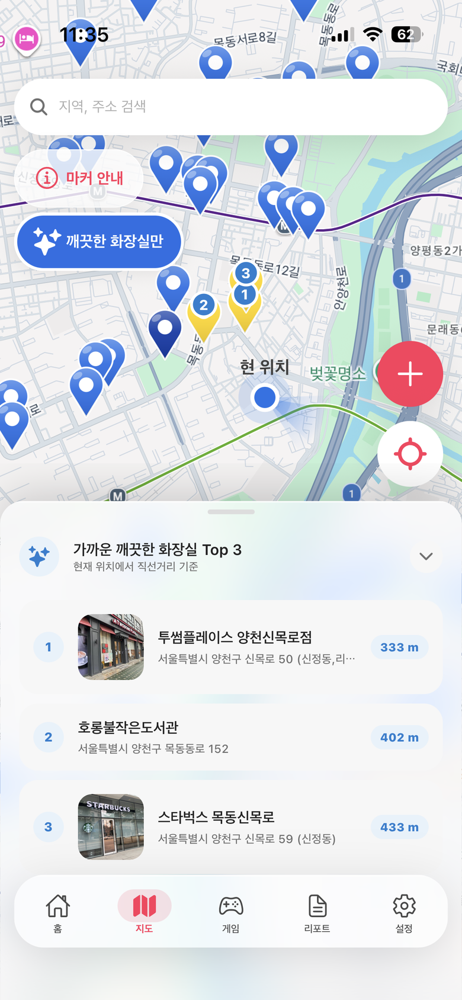
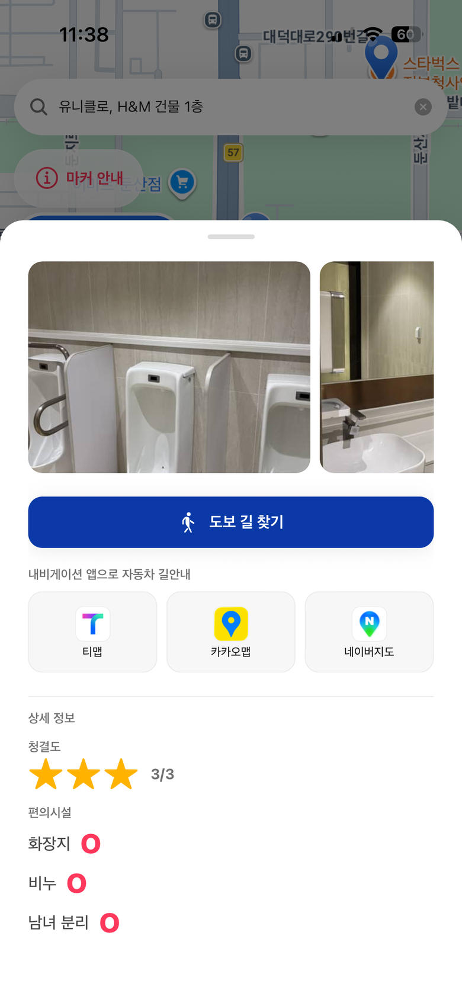
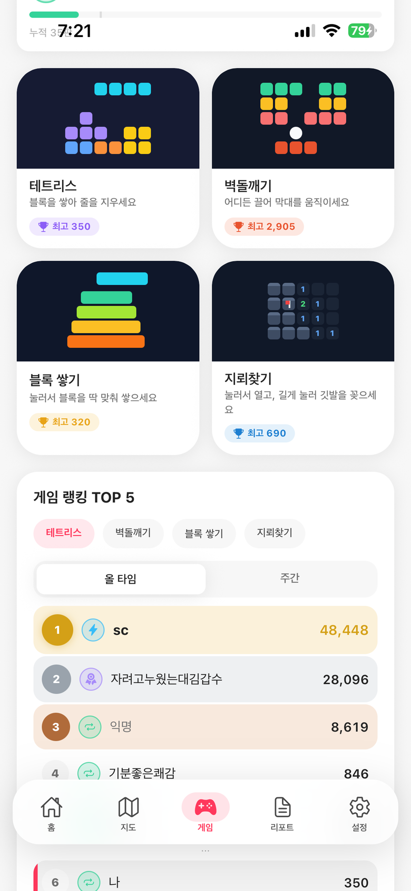

🏆
기여자 랭킹
승인된 제보 수로 매겨지는 공개 랭킹. 닉네임을 정하지 않으면 익명으로 올라갑니다.
찾기, 청결도, 길 찾기, 후기, 랭킹까지. 화장실에 필요한 모든 걸 앱 하나에 담았습니다. 앱을 켜면 내 위치와 가장 가까운 화장실이 바로 뜹니다.
무료 · iOS & 안드로이드 · 가입 없이 바로 사용

지도는 오래 들여다보는 화면이 아닙니다. 그래서 KORE의 핀은 색 하나로 어떤 화장실인지, 얼마나 깨끗한지까지 알려줍니다.

핀을 누르면 사진과 길 찾기 버튼이 먼저 보이고, 그 아래로 어떤 곳인지 자세한 정보가 이어집니다. 어떤 화장실이든 같은 순서로요. 다 봤으면 아래로 밀어서 닫으면 됩니다. 파란 핀(깨끗한 화장실)의 상세 정보는 KORE 프리미엄에서 열립니다.

로그인 없이도 제보할 수 있습니다. 검토를 거쳐 지도에 올라가고, 승인된 제보는 기여자 랭킹에 쌓입니다.
위치를 찍고 이름과 사진을 남기면 끝. 한국어로 쓰면 나머지 4개 언어로 자동 번역됩니다.
운영자가 하나씩 확인합니다. 승인되면 알림으로 알려드려요.
승인되면 그 순간부터 모든 사용자의 지도에 나타납니다.
승인된 제보 수로 매겨지는 공개 랭킹. 닉네임을 정하지 않으면 익명으로 올라갑니다.
단골 건물 화장실처럼 나만 알고 싶은 곳은 청록 핀으로 내 지도에만 저장할 수 있습니다. 검토 없이 바로 저장돼요.
다녀온 곳에 별점과 한마디를 남기면 바로 올라가고 5개 언어로 번역돼, 다른 나라 여행자에게도 그대로 전해집니다.
앱에서 보낸 피드백에 운영자가 직접 답장하고, 답장이 오면 알림으로 알려드립니다.
볼일 보는 몇 분, 그냥 폰만 넘기기엔 심심하니까. 설명서 없이 바로 한 판 하는 미니게임 일곱 종. 그중 네 개가 오늘의 게임으로 올라오고, 매일 자정 몇 개씩 무작위로 바뀝니다. 한 판에 토큰 하나, 토큰은 30분마다 다시 찹니다. 주간 랭킹은 매주 월요일에 새로 시작하고, 올타임 랭킹은 계속 쌓이며, 내 점수는 지역·국가 랭킹에도 더해집니다.

이름과 주소, 시설 정보, 후기까지 전부 번역해 담았습니다. 앱을 켜는 순간 각자의 언어로 보입니다.
네. 무료로 내려받아 화장실 찾기와 길 찾기, 제보, 후기, 게임까지 바로 쓸 수 있습니다(광고 포함).
깨끗한 화장실(파란 핀)의 상세 정보, 조건으로 찾는 필터, 광고 제거, 게임 토큰 무제한은 선택형 월 구독인 KORE 프리미엄에서 제공되며, 스토어에서 대상이 되는 첫 구독에는 7일 무료 체험이 있습니다.
아니요. 화장실 찾기는 물론이고 제보·후기 작성·게임 랭킹·"나만 보기" 마커까지 로그인 없이 할 수 있습니다. 가입해 두면 휴대폰을 바꿔도 기록이 그대로 이어집니다.
필수는 아닙니다. 다만 허용하면 지도가 지금 계신 곳에서 열리고 거리도 함께 표시됩니다. 위치는 앱이 켜져 있는 동안에만 사용하고, 백그라운드에서는 수집하지 않습니다.
공중화장실 핀은 핀을 누르고 "마커 수정 제안"을, 카페·도서관 등 그 밖의 곳은 전체 탭의 "피드백 보내기"로 알려주세요. 검토 후 반영되고, 보낸 제안은 전체 탭 → 내 마커 · 피드백 · 이용 내역 → 내 제안에서 확인하실 수 있습니다.
받아두면 언젠가 반드시 씁니다. 설치하고 위치 권한만 허용하면 준비 끝입니다.